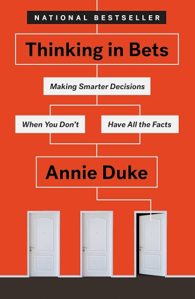

Best Psychology and Decision-Making Books
From day-to-day stuff to life-defining decisions, decision-making is a never-ending phenomenon of conscious existence. If you are reading this, you are choosing to read this instead of doing something else. Everything we do in life is essentially a decision, a choice. An understanding of human psychology can greatly improve the way we go about our lives because we can make better predictions about what will make us better off, and avoid potential pitfalls. Here are the best books on understanding how the mind works and using that wisdom to make better decisions.
Thinking Fast and Slow, by Daniel Kahneman
Dr. Kahneman is a Nobel laureate in Economics and this book is based on his research and findings done with his colleague Amos Tversky. It is about two systems of the mind: System 1 which is fast, automatic and instinctive; and System 2 which is slow, calculative and intelligent. The book goes into how our thinking is often distorted because of cognitive biases and the implications of the same in economics, finance, and day-to-day decisions. It will change the way you think about your own decisions. You will acknowledge the limits of your abilities, the role of luck and randomness in life. You will appreciate the importance of evidence, statistics and rationality, you will awe at the complexity of the world and of the human mind. It will improve your decision-making in all spheres of life. A slightly difficult read, with a theoretical bent at places, but without doubt it's worth the effort. A mind-altering book, to say the least.
The book is divided into 5 parts:
- Two Systems: An introduction to how our thinking is be divided into two systems
- Heuristics and Biases: More about psychology, in what ways is our brain flawed
- Overconfidence: Our illusions and irrational confidence in our beliefs relying on coherence rather than evidence, insights about stock markets, forecasting, etc.
- Choices: Past theories of choice and utility, Dr. Kahneman's new prospect theory; why we make the choices we make
- Two Selves: The experiencing self and the remembering self, their distinction and finally its implications in life
I found Parts 3 and 4 the most enlightening. Prospect theory has been a paradigm-shifting theory in Behavioral economics that explains how the assumption in classical Economics that human agents make rational decisions is violated because of psychological biases, and how we ascribe value and utility to the expected outcomes of our decisions.
What I liked the most in this book:
- Skepticism and rigorous scientific arguments, and advice given thereby
- The connection of psychology, neuroscience and the brain's evolutionary history with economics, decision-making and choices
- The feeling of awe after realizing how I often make bad choices in day-to-day life, or how a particular thinking pattern works without me even noticing.
- The feeling of humility after realizing how flawed my mind is, driven by emotion rather than rationality
The Paradox of Choice, by Barry Schwartz
The Psychology of Money, by Morgan Housel
Thinking in Bets, by Annie Duke

How many times have you said to yourself, "I should have known this before!" or "I was such an idiot, I should have thought better!". All of us understand the importance of decision-making in life. Everything we do in life is but a decision, with varying level of consequences. How to get better at decision-making? How to understand the world better? How do we deal with uncertainty? That is precisely what this book aims to answer. Drawing from years of experience as a professional poker player, the author explains how life is more like a game of poker than a game of chess. There is a huge element of uncertainty in everything that happens in our lives, and how we choose and decide under this uncertainty is one of the most important determinants of how our lives turn out to be.
She describes a lot of cognitive biases that have been embedded into our neural hardware by biological evolution. We are far from rational strategists and often succumb to emotional instincts while making important decisions, and ultimately this affects us. The book gives practical insights into how to (try to) avoid distorted thinking and develop a more clear, unbiased, rational worldview. The theme of “truthseeking” is central to the book. By truthseeking, she means the readiness to investigate and accept the truth irrespective of whether we like it or not, irrespective of whether it fits our current narratives or challenges them. By developing such a truthseeking attitude can we defend ourselves against our cognitive biases and inch towards more accurate mental models of how things work.
Who should read this book:
- Anyone who wants to improve their decision-making and reduce the chance of regrets.
- Anyone who is despairing too much over a bad event or rejoicing too much over a good event
- Anyone who is 100% sure of their ideas in life
- Anyone who attributes every outcome in life to their own greatness or inadequacy
- Anyone who believes that others’ successes are because of luck and others’ failures are because of their faults
- Anyone who trusts the newspapers and news channels a bit too much
Stumbling on Happiness, by Daniel Gilbert